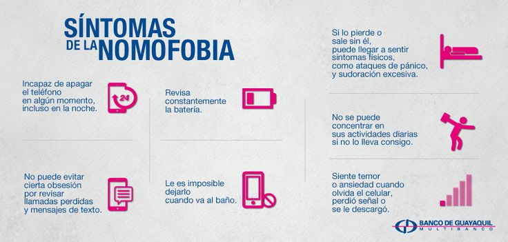

¿Cómo identificar la nomofobia?
Los síntomas de la nomofobia pueden variar en intensidad según la persona,
pero en general se relacionan con la ansiedad y la dependencia
hacia el teléfono móvil. Algunos de los más comunes son:
- Ansiedad o nerviosismo al olvidar el celular o quedarse sin batería.
- Revisar constantemente la señal o conexión a internet.
- Obsesión por verificar el nivel de batería.
- Revisar el teléfono compulsivamente incluso sin notificaciones.
- Mal humor, irritabilidad o estrés al no tener acceso al dispositivo.
- Dificultad para dormir por usar el celular hasta altas horas de la noche.
- Distracción y falta de atención en conversaciones cara a cara.

Reconocer estos síntomas es el primer paso para recuperar el control
y establecer un uso más equilibrado de la tecnología.